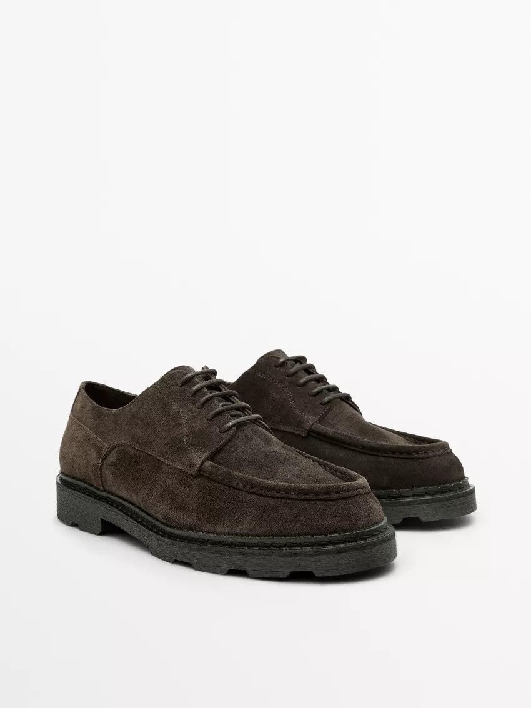

Mocassins em Camurça
99,95 €Elegantes mocassins em camurça premium. Confortáveis para o dia todo.
Especificações:
- Material: Camurça Premium 100%
- Sola: Borracha flexível antiderrapante
- Tamanhos: 39 até 47
- Altura: 3-4 cm
- Largura: 8-10 cm
- Peso por sapato: 180-200g
- Cores: Marrom, Castanho, Cinza
- Cuidados: Limpar com escova macia, aplicar impermeabilizante